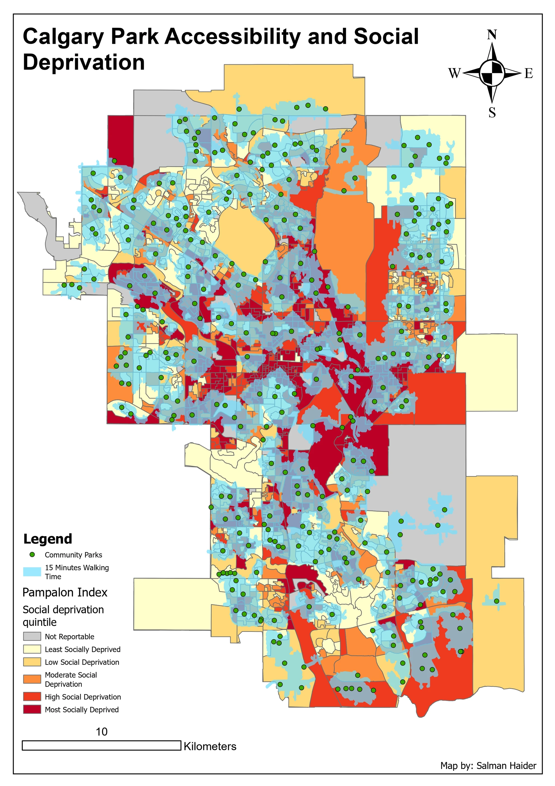
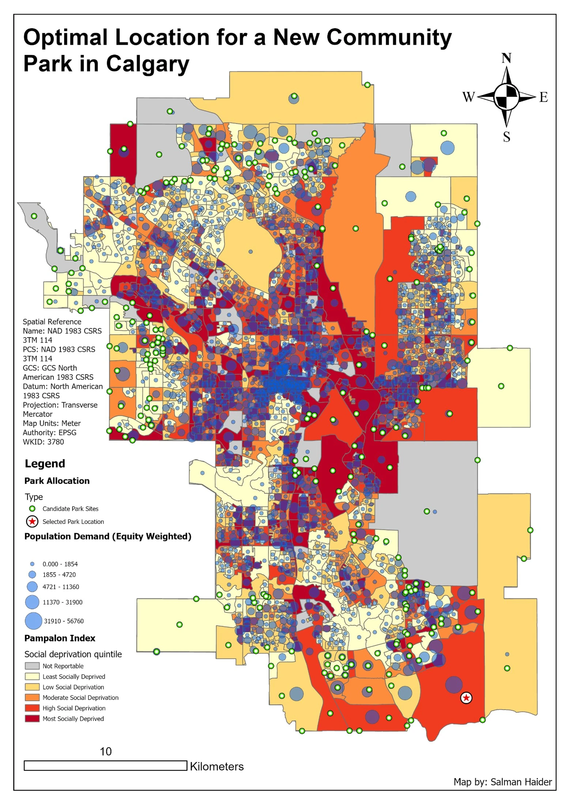

Spatial analysis
Calgary park access
I used Calgary's community parks to investigate two questions: where does walking access fall short, and do those gaps overlap with communities experiencing greater social deprivation? I then tested where one additional park could serve demand that was being missed.
The aim was to give park planning a useful starting point. Finding empty space on a map would not be enough; the proposed location also needed to make sense for the people living nearby.
- Study area
- Calgary, Alberta
- Walking threshold
- 15 minutes
- New facilities
- One candidate site selected
- Tools
- ArcGIS Pro, Network Analyst, Service Area, Location Allocation
Existing park access


Green points are community parks and blue areas are within the modelled 15 minute walk. Gaps in that coverage can be compared with the underlying social deprivation classes, from pale yellow to dark red.
Inspect details: Existing park accessWho was outside walking range?
I calculated 15 minute walking service areas around community parks, then examined the gaps against income, employment and Pampalon social deprivation quintiles. The first map combines the parks, their walking coverage and the deprivation pattern so the gaps can be read in their social context.
Several gaps overlapped with greater deprivation, lower income or lower employment. The pattern was not uniform: some better off areas also lacked coverage. I took this as a reason to examine those factors together when deciding which gaps deserved closer attention.
Testing one additional park
I used a location allocation model with Maximum Attendance as the objective, a 15 minute walking limit and one new facility to select. I weighted demand by population multiplied by the social deprivation value, so an area with more residents and greater deprivation had more influence on the choice.
Each dissemination area was represented by a demand point. That made the population data usable in the network model, though it simplified the walking distances for residents spread across the area.
Candidate location for a new park


The star marks the selected site in the southeast. Blue circles show demand weighted by population and social deprivation. The model favoured this site, but the surrounding residential pattern still needed closer review.
Inspect details: Candidate location for a new parkWhy I questioned the selected site
The selected site was inside a service gap. When I turned on the basemap, however, much of the nearby dense housing already fell within existing park coverage. The selected area was still developing, which made the immediate benefit less clear than the model result first suggested.
I would use the result to guide a closer review of residential density and planned growth before recommending a location. For a planning team, the maps identify access gaps and a candidate worth investigating. They also show why checking the surrounding land use matters before accepting a modelled optimum.
Data and references
- Pampalon social deprivation index
- Community park, population and dissemination area data used in the project